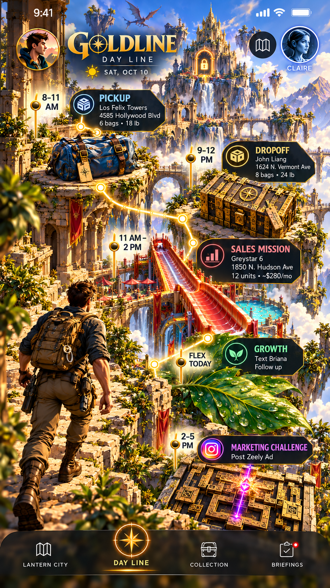
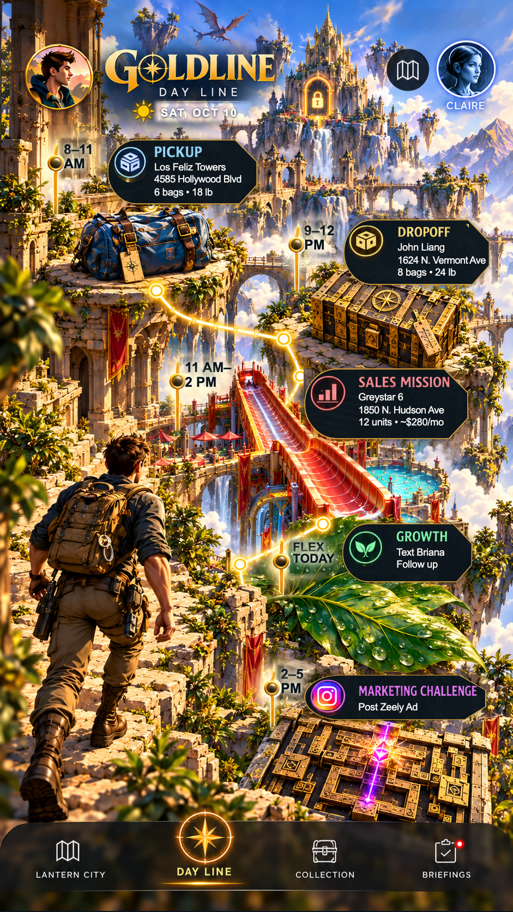

DAYLINE approved comparison
Original approval and the actual browser renderer with the approved sample data. Live task text remains native and independently clickable. The shrinking-picture issue remains outside this change.
Approved image
Browser render